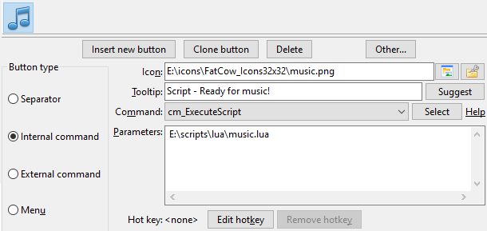
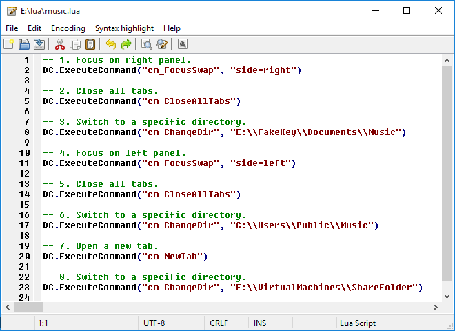
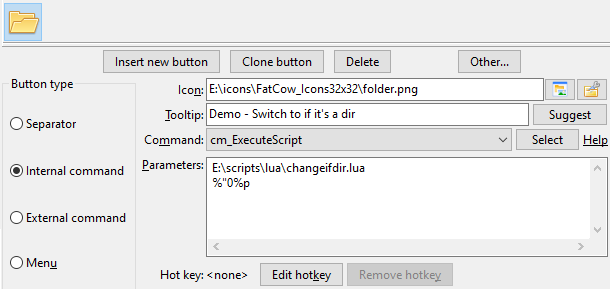
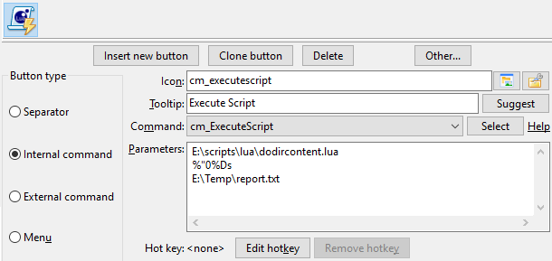
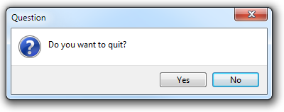
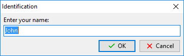

Ausführliche Informationen über die Skriptsprache Lua stehen auf der Lua-Website.
Double Commander kann Lua-Skripte über den Befehl cm_ExecuteScript ausführen.
Skriptparameter müssen unverändert übergeben werden, ohne Maskierung (ohne Anführungszeichen oder „\“). Dafür müssen wir die Variable %"0 verwenden: zum Beispiel %"0%p0 für die Datei unter dem Cursor statt %p0 oder %"0%D für das aktuelle Verzeichnis statt %D. Andernfalls werden Anführungszeichen, die Double Commander automatisch hinzufügt, als Teil des Parameters übergeben, und Sie müssen sie berücksichtigen.
Um eine Liste aller ausgewählten Dateien zu erhalten, können wir Variablen (%LU, %FU oder %RU) oder interne Befehle (cm_SaveSelectionToFile, cm_SaveFileDetailsToFile, cm_CopyFullNamesToClip oder cm_CopyFileDetailsToClip) verwenden.
Wir können zum Beispiel %p verwenden: In diesem Fall übergibt Double Commander die Namen aller ausgewählten Dateien in einer Zeile und trennt die Namen mit einem Leerzeichen.
Außerdem lassen sich Inhalts-Plugins mit einem Lua-Skript schreiben. Beispiele liegen im Programmordner (plugins/wdx/scripts). Im Wiki gibt es eine Seite zum Schreiben von Plugins. Einschränkungen: Es werden nur die folgenden Datentypen unterstützt
Die Liste oben enthält die Namen aus den Header-Dateien. In Lua-Skripten müssen wir die in Klammern angegebenen numerischen Werte verwenden.
Zur Textkodierung
Alle unten beschriebenen zusätzlichen Funktionen nehmen Zeichenkettenparameter in der Kodierung UTF-8 entgegen und geben Zeichenketten in dieser Kodierung zurück (außer der Funktion LazUtf8.ConvertEncoding).
Einige Funktionen aus den Standardbibliotheken von Lua wurden durch Funktionen von Double Commander oder Free Pascal/Lazarus ersetzt (oder es wurden neue geschrieben). Das stellt die Unterstützung von UTF-8 bereit.
Beim Schreiben von Plugins sollten wir für Textdaten ebenfalls UTF-8 verwenden (ft_multiplechoice, ft_string und ft_fulltext).
Speichern Sie Skripte in der Kodierung UTF-8 ohne BOM.
Hinweise
Die Automatisierung mit Lua bietet große Möglichkeiten, doch es gibt Feinheiten, die in manchen Fällen zu beachten sind. Versuchen wir, sie in diesem Unterabschnitt zu sammeln.
1. Wenn automatisches Aktualisieren und die Option Dateiliste in einem eigenen Thread laden aktiviert sind, arbeitet die Aktualisierungsfunktion asynchron. Gleichzeitig werden Skripte im Haupt-Thread von Double Commander ausgeführt, und das kann sich daher in manchen Fällen auf die Arbeit Ihres Skripts auswirken. Zum Beispiel funktioniert manchmal die aufeinanderfolgende Ausführung von Befehlen zur Navigation nicht (zum Beispiel große Verzeichnisse, langsame Festplatte). Deaktivieren Sie in diesem Fall Dateiliste in einem eigenen Thread laden oder suchen Sie nach einer anderen Lösung.
Wenn Ihr Skript im aktuellen Panel neue Dateien erstellt oder vorhandene Dateien umbenennt, danach aber nicht endet und weitere Aktionen ausführt (zum Beispiel Dateien auswählen oder den Cursor bewegen), bleiben diese Aktionen in manchen Fällen ohne Wirkung: Noch nicht alle Dateien sind im Panel, und Sie müssen zuerst den Befehl cm_Refresh aufrufen. Unter den beschriebenen Bedingungen wird cm_Refresh ebenfalls asynchron ausgeführt, und Double Commander hat möglicherweise keine Zeit, die Dateiliste nach Ihren Änderungen vollständig zu aktualisieren.
Automatisches Aktualisieren und das Laden der Dateiliste in einem eigenen Thread sind für einen Dateimanager praktische Funktionen. Experimentell wurde daher ein stabiles Verfahren gefunden, die Steuerung vorübergehend an das Programm zurückzugeben und die Dateiliste vollständig aktualisieren zu lassen:
DC.ExecuteCommand("cm_Refresh") i = 10 while i > 0 do SysUtils.Sleep(10) DC.ExecuteCommand("") i = i - 1 end
2. Die Lua-Funktion io.open verwendet die Standard-C-Funktion fopen: Im Textmodus kann diese Funktion die Art der Zeilenenden (CRLF, LF oder CR) beim Lesen und Schreiben umwandeln, und das kann zu unerwarteten Ergebnissen führen. Wenn Sie auf Dateien mit unterschiedlichen Arten von Zeilenenden stoßen oder wenn Sie ein plattformübergreifendes Skript schreiben, muss das berücksichtigt werden, oder es kann praktischer sein, den Binärmodus vorzuziehen.
3. Für den Dialog Dateieigenschaften unter Linux und anderen Unix-ähnlichen Betriebssystemen wird die Funktion ContentGetValue mit dem Flag CONTENT_DELAYIFSLOW aufgerufen (der vierte Parameter, der Wert ist 1). Das vermeidet die Verzögerung beim Öffnen des Fensters: Wenn das Abrufen der Daten langsam ist, können wir diese Daten ausschließen, indem wir einfach eine Prüfung des Flag-Werts hinzufügen und für solche Felder oder das Plugin nil zurückgeben.
4. Wenn das Plugin eine leere Zeichenkette zurückgeben soll, ist es schneller, nil statt "" zu übergeben.
Um eine Lua-Skriptdatei zu interpretieren, benötigen wir eine Lua-DLL-Datei. Double Commander unterstützt die Versionen 5.1 - 5.5.
Wir können die DLL-Datei aus dem LuaJIT-Projekt verwenden. LuaJIT verbindet einen schnellen, in Assembler geschriebenen Interpreter mit einem modernen JIT-Compiler. Außerdem erhalten wir die FFI-Bibliothek, die den Aufruf externer C-Funktionen und die Verwendung von C-Datenstrukturen aus reinem Lua-Code erlaubt.
Die DC-Distributionen für Windows enthalten standardmäßig eine Lua-DLL (in DC 0.9.7 und neuer aus dem LuaJIT-Projekt). In anderen Fällen können wir sie über unseren Paketmanager finden und installieren oder selbst übersetzen. Wenn wir eine 64-Bit-Version von DC verwenden, muss die DLL ebenfalls die 64-Bit-Version sein.
Standardmäßig sucht DC nach einer Datei mit dem Namen lua5.1.dll (Windows), liblua5.1.so.0 (Unix oder GNU/Linux) oder liblua5.1.dylib (macOS) in seinem Verzeichnis und im Systemverzeichnis. Wir können den Dateinamen (und den Pfad) im Parameter Zu verwendende Lua-Bibliotheksdatei ändern.
Double Commander bietet einige Funktionsbibliotheken für unsere Lua-Skripte.
Das ist die Liste.
| Liste der Bibliotheken | ||
|---|---|---|
| Bibliotheksname | Skriptname | Kurzbeschreibung |
| DC | Spezielle Funktionen von Double Commander | |
| SysUtils | Verschiedene Systemfunktionen | |
| Clipbrd | Stellt externe Funktionen der Zwischenablage bereit | |
| Dialogs | Interaktion mit dem Benutzer | |
| LazUtf8 | UTF-8-Zeichenkettenfunktionen | |
| Char | Informationen über Zeichen ermitteln | |
| os | Funktionen im Zusammenhang mit dem Betriebssystem | |
Diese Bibliothek enthält die speziellen Funktionen von Double Commander.
Sie stellt alle ihre Funktionen in der Tabelle DC bereit.
| DC-Bibliothek | |
|---|---|
| Funktionsname | Beschreibung |
|
DC.LogWrite(sMessage, iMsgType, bForce, bLogFile) Eine Nachricht in das Protokollfenster schreiben:
Die interne Funktion von Double Commander zum Schreiben in das Protokoll arbeitet asynchron (siehe Hinweise in der Einführung). Nachrichten von |
|
|
iPanel = DC.CurrentPanel() Aktives Panel ermitteln: gibt 0 zurück, wenn das linke Panel aktiv ist, oder 1, wenn das rechte aktiv ist. DC.CurrentPanel(iPanel) Aktives Panel setzen: linkes Panel, wenn iPanel gleich 0 ist, oder rechtes, wenn 1. |
|
|
DC.ExecuteCommand(sCommand, Param1, Param2,...,ParamX) Damit kann das Skript interne Befehle von Double Commander aufrufen. sCommand enthält den eigentlichen Namen des internen Befehls. Wir können so viele Param... angeben, wie der Befehl unterstützt. |
|
|
DC.GoToFile(sFileName, bActive) Öffnet das Verzeichnis, in dem sFileName liegt, und setzt den Cursor auf sFileName. Um ein Verzeichnis zu öffnen, cm_ChangeDir verwenden oder versuchen, das Verzeichnistrennzeichen und „..“ (ohne Anführungszeichen) an sFileName anzuhängen. bActive ist ein optionaler Parameter: Die Funktion kann im aktiven Dateipanel ( |
|
|
Result = DC.GetPluginField(sFileName, sPlugin, iField, iUnit) Ermöglicht, Daten über das installierte Inhalts-Plugin (WDX) abzurufen:
|
|
|
sResult = DC.ExpandVar(String) Gibt eine Zeichenkette zurück, in der alle Variablen durch ihre Werte ersetzt sind (außer Umgebungsvariablen; dafür SysUtils.ExpandEnv verwenden). |
|
Zusätzlich zu den internen Befehlen können wir in Skripten den besonderen Befehl cm_ExecuteToolBarItem verwenden. Dieser Befehl ermöglicht, Schaltflächen der Werkzeugleiste über ihren Bezeichner aufzurufen (im Programm stellt diese Funktion die Verwendung von Tastenkürzeln für Schaltflächen der Werkzeugleiste bereit). Der Befehl wird wie gewöhnliche interne Befehle verwendet (siehe die Beispiele unten) und hat die folgenden Parameter:
| Parameter | Wert | Beschreibung |
|---|---|---|
| ToolBarID | TfrmOptionsToolbar | die Schaltfläche der Hauptwerkzeugleiste |
| TfrmOptionsToolbarMiddle | die Schaltfläche der mittleren Werkzeugleiste | |
| (nicht vorhanden) | die Schaltfläche der Hauptwerkzeugleiste | |
| ToolItemID | Bezeichner | der eindeutige Bezeichner der Schaltfläche |
Der eindeutige Bezeichner ist im Tag ID gespeichert, und wir haben mehrere Möglichkeiten, ihn zu erhalten: Wir können die Schaltfläche in der Datei doublecmd.xml finden, in der Sicherungsdatei der Werkzeugleiste, oder die Schaltfläche einfach in die Zwischenablage kopieren und ihren Code in einen Texteditor einfügen.
Hinweis: Bezeichner werden automatisch erzeugt und müssen nicht mit den Bezeichnern ähnlicher Schaltflächen in einer anderen Kopie des Programms übereinstimmen. Bei Bedarf können wir jedoch manuell einen eigenen Wert setzen.
In diesem Beispiel haben wir ein einfaches Skript geschrieben, das Folgendes tut:
-- 1. Fokus auf das rechte Panel. DC.ExecuteCommand("cm_FocusSwap", "side=right") -- 2. Alle Registerkarten schließen. DC.ExecuteCommand("cm_CloseAllTabs") -- 3. Zu einem bestimmten Verzeichnis wechseln. DC.ExecuteCommand("cm_ChangeDir", "E:\\FakeKey\\Documents\\Music") -- 4. Fokus auf das linke Panel. DC.ExecuteCommand("cm_FocusSwap", "side=left") -- 5. Alle Registerkarten schließen. DC.ExecuteCommand("cm_CloseAllTabs") -- 6. Zu einem bestimmten Verzeichnis wechseln. DC.ExecuteCommand("cm_ChangeDir", "C:\\Users\\Public\\Music") -- 7. Eine neue Registerkarte öffnen. DC.ExecuteCommand("cm_NewTab") -- 8. Zu einem bestimmten Verzeichnis wechseln. DC.ExecuteCommand("cm_ChangeDir", "E:\\VirtualMachines\\ShareFolder")
Mit dem internen Befehl cm_ExecuteScript können wir eine Schaltfläche der Werkzeugleiste einrichten, die unser Skript ausführt.
Angenommen, diese Skriptdatei ist E:\scripts\lua\music.lua, dann könnten wir die Schaltfläche so konfigurieren:

Außerdem können wir den eingebauten Editor von Double Commander verwenden, um unsere Skripte zu bearbeiten. Wenn der Dateiname die Erweiterung .lua hat, erkennt der eingebaute Editor sie und stellt uns eine Syntaxhervorhebung bereit, die speziell für die Sprache Lua ist:

Diese Bibliothek enthält verschiedene Systemfunktionen.
Sie stellt alle ihre Funktionen in der Tabelle SysUtils bereit.
| Systembibliothek | |||||||||||||||||||||||
|---|---|---|---|---|---|---|---|---|---|---|---|---|---|---|---|---|---|---|---|---|---|---|---|
| Funktionsname | Beschreibung | ||||||||||||||||||||||
|
SysUtils.Sleep(iMilliseconds) Hält die Ausführung des Skripts für die angegebene Anzahl von iMilliseconds an. |
|||||||||||||||||||||||
|
SysUtils.GetTickCount() Gibt einen ansteigenden Zähler von Uhr-Ticks zurück. Er ist für Zeitmessungen nützlich, über den Abstand zwischen den Ticks sollten jedoch keine Annahmen getroffen werden. |
|||||||||||||||||||||||
|
bExists = SysUtils.FileExists(sFileName) Prüft, ob eine bestimmte Datei im Dateisystem vorhanden ist. Gibt in bExists den Wert |
|||||||||||||||||||||||
|
bExists = SysUtils.DirectoryExists(sDirectory) Prüft, ob sDirectory im Dateisystem vorhanden ist und tatsächlich ein Verzeichnis ist. Wenn das zutrifft, gibt die Funktion in bExists den Wert |
|||||||||||||||||||||||
|
iAttr = SysUtils.FileGetAttr(sFileName) Gibt in iAttr die Attributeinstellungen der Datei sFileName zurück. Die ausführliche Erklärung des Rückgabewerts steht hier. |
|||||||||||||||||||||||
|
Handle, FindData = SysUtils.FindFirst(sPath) Sucht nach Dateien, die zu sPath passen, im Allgemeinen mit Platzhaltern. Wenn keine Datei gefunden wird, ist Handle Wenn mindestens ein Eintrag gefunden wird, kann das zurückgegebene Handle in nachfolgenden Die Tabelle FindData enthält Informationen über die gefundene Datei oder das gefundene Verzeichnis. Die Felder der Tabelle FindData sind:
|
|||||||||||||||||||||||
|
Result, FindData = SysUtils.FindNext(Handle) Findet das nächste Vorkommen einer mit Das zurückgegebene Result ist ungleich Dieselben Hinweise wie bei Bemerkung: Auf den letzten Aufruf von |
|||||||||||||||||||||||
|
SysUtils.FindClose(Handle) Beendet eine Folge von Aufrufen von Gibt den von diesen Aufrufen belegten Speicher frei. Dieser Aufruf ist unbedingt erforderlich, sonst kann Speicher verloren gehen. |
|||||||||||||||||||||||
|
bResult = SysUtils.CreateDirectory(sDirectory) Erstellt eine Kette von Verzeichnissen, sDirectory ist der vollständige Pfad zum Verzeichnis. Gibt |
|||||||||||||||||||||||
|
bResult = SysUtils.RemoveDirectory(sDirectory) Löscht das Verzeichnis mit dem Namen sDirectory. Gibt Anders als os.remove gibt diese Funktion im Fehlerfall keine Beschreibung zurück, sie kann jedoch nicht leere Verzeichnisse löschen. |
|||||||||||||||||||||||
|
bResult = SysUtils.CreateHardLink(sFileName, sLinkName) Erstellt den harten Link sLinkName auf die Datei sFileName. Gibt |
|||||||||||||||||||||||
|
bResult = SysUtils.CreateSymbolicLink(sFileName, sLinkName) Erstellt den symbolischen Link sLinkName auf die Datei oder das Verzeichnis sFileName. Gibt |
|||||||||||||||||||||||
|
sTarget = SysUtils.ReadSymbolicLink(sLinkName, bRecursive) Liest das Ziel des symbolischen Links sLinkName. Wenn bRecursive Gibt den Pfad zurück, auf den der symbolische Link sLinkName zeigt, oder eine leere Zeichenkette, wenn der Link ungültig ist oder die Datei, auf die er zeigt, nicht vorhanden ist und bRecursive |
|||||||||||||||||||||||
|
sName = SysUtils.ExtractFileName(sFileName) Extrahiert den Dateinamenteil aus einem vollständigen Pfad. Der Dateiname besteht aus allen Zeichen nach dem letzten Verzeichnistrennzeichen („/“ oder „\“) oder dem Laufwerksbuchstaben. |
|||||||||||||||||||||||
|
sExt = SysUtils.ExtractFileExt(sFileName) Gibt die Erweiterung eines Dateinamens zurück (alle Zeichen nach dem letzten „.“ (Punkt), einschließlich des Zeichens „.“). |
|||||||||||||||||||||||
|
sPath = SysUtils.ExtractFilePath(sFileName) Extrahiert den Pfad aus einem Dateinamen (einschließlich des Laufwerksbuchstabens). Der Pfad besteht aus allen Zeichen vor dem letzten Verzeichnistrennzeichen („/“ oder „\“), einschließlich des Verzeichnistrennzeichens selbst. |
|||||||||||||||||||||||
|
sDir = SysUtils.ExtractFileDir(sFileName) Extrahiert nur den Verzeichnisanteil von sFileName, einschließlich eines Laufwerksbuchstabens. Der Verzeichnisname hat KEIN abschließendes Verzeichnistrennzeichen, im Unterschied zu |
|||||||||||||||||||||||
|
sDrive = SysUtils.ExtractFileDrive(sFileName) Extrahiert den Laufwerksanteil aus einem Dateinamen. Hinweis: Einige Betriebssysteme unterstützen keine Laufwerksbuchstaben. |
|||||||||||||||||||||||
|
sName = SysUtils.GetAbsolutePath(sFileName, sBaseDirectory) Gibt den absoluten (vollständigen) Pfad zur Datei zurück:
Wenn der absolute Pfad nicht ermittelt werden konnte, gibt die Funktion den Wert von sFileName zurück. |
|||||||||||||||||||||||
|
sName = SysUtils.GetRelativePath(sFileName, sBaseDirectory) Gibt den Dateinamen relativ zum angegebenen Verzeichnis zurück:
Wenn sFileName und sBaseDirectory denselben Wert enthalten, gibt die Funktion eine leere Zeichenkette ("") zurück. Wenn es nicht möglich war, den Dateinamen mit einem relativen Pfad zu erhalten, gibt die Funktion den Wert von sFileName zurück. |
|||||||||||||||||||||||
|
bResult = SysUtils.MatchesMask(sFileName, sMask, iMaskOptions) Gibt iMaskOptions (optionaler Parameter, standardmäßig 0) ist die Summe der folgenden Werte:
|
|||||||||||||||||||||||
|
bResult = SysUtils.MatchesMaskList(sFileName, sMaskList, sSeparator, iMaskOptions) Gibt sSeparator und iMaskOptions (siehe oben) sind optionale Parameter. |
|||||||||||||||||||||||
|
bResult = SysUtils.Execute(sCommand) Führt sCommand so aus, als würde es in der Befehlszeile eingegeben, und gibt Hinweis: Unter Windows öffnet die Funktion os.execute jedes Mal ein Terminalfenster, die Funktion |
|||||||||||||||||||||||
|
sResult = SysUtils.ExpandEnv(String, bSpecial) Gibt eine Zeichenkette zurück, in der alle Umgebungsvariablen durch ihre Werte für den aktuellen Benutzer ersetzt sind. bSpecial ist ein optionaler Parameter: Wenn |
|||||||||||||||||||||||
|
sTempFileName = SysUtils.GetTempName() Gibt einen Dateinamen zurück, der als temporärer Dateiname verwendet werden kann (im Systemverzeichnis für die temporären Dateien), ähnlich der Funktion os.tmpname, die Datei wird jedoch im Unterverzeichnis _dc~~~ erstellt, das beim Schließen von Double Commander automatisch gelöscht wird. |
|||||||||||||||||||||||
|
Result = SysUtils.GetFileProperty(sFileName, iValue) Gibt die Dateieigenschaft zurück, die iValue entspricht:
Gibt eine Zahl (Dateigröße, Zeitstempel) oder eine Zeichenkette (in den anderen Fällen) zurück. Im Fehlerfall gibt die Funktion |
|||||||||||||||||||||||
|
bResult = SysUtils.FileSetTime(sFileName, iModification, iCreation, iLastAccess) Ermöglicht, Zeitstempel (Unix-Zeitformat) für sFileName zu setzen: Änderungsdatum, Erstellungsdatum und Datum des letzten Zugriffs. Für Zeitstempel, die ignoriert werden sollen, null angeben. Gibt |
|||||||||||||||||||||||
|
SysUtils.PathDelim Das Zeichen, das das aktuelle Betriebssystem verwendet, um Verzeichnisnamen im vollständigen Dateinamen zu trennen. Unter Unix/Linux ist das Verzeichnistrennzeichen „/“ und unter Windows „\“. |
|||||||||||||||||||||||
FileGetAttr gibt die Attributeinstellungen der Datei sFileName zurück.
Das Attribut ist eine mit ODER verknüpfte Kombination der folgenden Konstanten:
| Im Rückgabewert von SysUtils.FileGetAttr verwendete Konstanten | |
|---|---|
| Wert | Bedeutung |
0x00000001 faReadOnly |
Die Datei ist schreibgeschützt. |
0x00000002 faHidden |
Die Datei ist versteckt. Unter Unix/Linux bedeutet das, dass der Dateiname mit einem Punkt beginnt. |
0x00000004 faSysFile |
Die Datei ist eine Systemdatei. Unter Unix/Linux bedeutet das, dass die Datei ein Zeichen- oder Blockgerät oder eine benannte Pipe (FIFO) ist. |
0x00000008 faVolumeId |
Datenträgerbezeichnung. Nur für DOS/Windows auf einem einfachen FAT-Dateisystem (nicht VFAT oder FAT32). |
0x00000010 faDirectory |
Die Datei ist ein Verzeichnis. |
0x00000020 faArchive |
Die Datei ist archiviert. Unter Unix/Linux nicht möglich. |
0x00000400 faSymLink |
Die Datei ist ein symbolischer Link. |
| Hinweis: Im Fehlerfall wird -1 zurückgegeben. | |
Ein Beispiel steht im nächsten Abschnitt.
Das folgende Skript ist ein Anwendungsbeispiel für SysUtils.FileGetAttr.
Wenn der Parameter als Verzeichnis erkannt wird, öffnet es eine neue Registerkarte im aktiven Panel und wechselt dorthin.
local params = {...} local iAttr if #params == 1 then -- Haben wir mindestens einen Parameter erhalten? iAttr = SysUtils.FileGetAttr(params[1]) if iAttr > 0 then -- Haben wir ein gültiges Attribut erhalten? if math.floor(iAttr / 0x00000010) % 2 ~= 0 then -- Ist Bit 4 gesetzt? Dann ist es ein Verzeichnis. DC.ExecuteCommand("cm_NewTab") DC.ExecuteCommand("cm_ChangeDir", params[1]) end end end
Im obigen Beispiel ist params[1] der erste an das Skript übergebene Parameter.
Bei Verwendung des internen Befehls cm_ExecuteScript ist es der erste Parameter, der nach dem Skriptdateinamen übergeben wird.
In unserem Beispiel können wir daher eine Beispielschaltfläche der Werkzeugleiste wie folgt einrichten:

In diesem Beispiel wird der Parameter %"0%p an das Skript übergeben. Das ist, ohne Anführungszeichen, der Dateiname des Eintrags, der im aktiven Panel ausgewählt ist, in dem Moment, in dem wir die Schaltfläche der Werkzeugleiste drücken.
Im folgenden Skriptbeispiel durchsuchen wir den Inhalt des Verzeichnisses, das wir als Parameter erhalten haben, und speichern die Ergebnisdaten in einer Textdatei, deren Dateiname als zweiter Parameter übergeben wird.
Das gibt uns eine gute Vorstellung von der Verwendung von FindFirst, FindNext und FindClose.
local params = {...} if #params == 2 then -- Haben wir unsere 2 Parameter erhalten? local Result = nil local hOutputFile = nil hOutputFile = io.output(params[2]) local Handle, FindData = SysUtils.FindFirst(params[1] .. "\\*") if Handle ~= nil then repeat io.write(FindData.Name .. "\r") io.write(FindData.Size .. "\r") io.write("---------------\r") Result, FindData = SysUtils.FindNext(Handle) until Result == nil SysUtils.FindClose(Handle) io.close(hOutputFile) end end
Im obigen Beispiel müssen wir unserem Skript zwei Parameter übergeben:
So lässt sich leicht eine Schaltfläche der Werkzeugleiste mit dem internen Befehl cm_ExecuteScript einrichten und der Parameter übergeben, um all das zu erledigen.

In diesem Beispiel wird der Parameter %"0%Ds als erster Parameter an das Skript übergeben. Das ist, ohne Anführungszeichen, das vom aktiven Panel angezeigte Verzeichnis.
Double Commander kann unseren Lua-Skripten externe Funktionen der Zwischenablage bereitstellen.
Die folgende Tabelle nennt uns die zugehörigen Funktionen:
| Zwischenablage-Bibliothek | |
|---|---|
| Funktionsname | Beschreibung |
|
Clipbrd.Clear() Löscht den Inhalt der Zwischenablage. |
|
|
sVar = Clipbrd.GetAsText() Holt den aktuellen Textinhalt der Zwischenablage und weist ihn sVar zu. Wenn die Zwischenablage keinen Text enthält, gibt die Funktion eine leere Zeichenkette zurück. |
|
|
Clipbrd.SetAsText(sVar) Speichert den Textinhalt von sVar in der Zwischenablage. |
|
|
Clipbrd.SetAsHtml(sHtml) Fügt der Zwischenablage den HTML-formatierten Text sHtml hinzu (Zwischenablageformat Dieser Inhalt wird in Anwendungen eingefügt, die dieses Zwischenablageformat unterstützen, zum Beispiel MS Word, LO Writer usw. Es ist korrekt, Daten sowohl mit Zum Beispiel können wir Folgendes haben:
Wenn wir zu Notepad wechseln und etwas einfügen wollen, fügt es als einfachen Text die Nachricht ein, die wir mit |
|
Das folgende Beispiel verwendet drei Funktionen im Zusammenhang mit der Zwischenablage: Clear, GetAsText und SetAsText.
Es ist ein recht langes Skript, aber es eignet sich gut, um einige Funktionen zusammenzuführen, die wir oben gesehen haben.
Es setzt voraus, dass sich unser aktives Panel derzeit in einem Verzeichnis mit vielen Quelltextdateien befindet.
Außerdem setzt es voraus, dass wir derzeit ein einzelnes Wort in der Zwischenablage haben und dass es als einzigen Parameter den aktuellen aktiven Ordner erhält.
Das Skript durchsucht die Dateien in dieser Verzeichnisebene und liest ihren Inhalt nacheinander, um eine Textzeile zu finden, die das Wort aus der Zwischenablage enthält.
Danach werden die Dateinamen der Dateien, die mindestens eine Zeile mit diesem Wort enthalten, in die Zwischenablage gelegt.
Danach verwendet das Skript den internen Befehl cm_LoadSelectionFromClip, und die Dateien, die das Wort enthalten, werden ausgewählt.
Außerdem legen wir am Ende das ursprüngliche Wort, nach dem gesucht werden musste, wieder in unsere Zwischenablage.
local params = {...} local Result = nil local iAttr local bFound = false local sCompleteFilename = "" local hInputFile = nil local sLine = "" local iPosS local iPosE local sFileToSelect = "" local sSearchString = "" if #params == 1 then -- Haben wir unseren Parameter erhalten? sSearchString = Clipbrd.GetAsText() -- Den zu suchenden Ausdruck holen. Clipbrd.Clear() -- Sicherstellen, dass die Zwischenablage leer ist. DC.ExecuteCommand("cm_MarkUnmarkAll") -- Sicherstellen, dass nichts ausgewählt ist. -- Durchsuchen wir nacheinander alle Dateien unseres Verzeichnisses. local Handle, FindData = SysUtils.FindFirst(params[1] .. "\\*") if Handle ~= nil then repeat sCompleteFilename = params[1] .. "\\" .. FindData.Name iAttr = SysUtils.FileGetAttr(sCompleteFilename) if iAttr > 0 then -- Haben wir ein gültiges Attribut erhalten? -- Wir brauchen eine Datei, kein Verzeichnis! if math.floor(iAttr / 0x00000010) % 2 == 0 then -- Die Datei jetzt zeilenweise lesen, bis zum Ende ODER bis etwas gefunden wurde. hInputFile = io.open(sCompleteFilename, "r") bFound = false while bFound == false do sLine = hInputFile:read() if sLine == nil then break end iPosS, iPosE = string.find(sLine, sSearchString) if iPosS ~= nil then bFound = true end end if bFound == true then sFileToSelect = sFileToSelect .. FindData.Name .. "\n" end io.close(hInputFile) end end Result, FindData = SysUtils.FindNext(Handle) until Result == nil SysUtils.FindClose(Handle) end -- Wenn wir etwas gefunden haben, auswählen! if sFileToSelect ~= "" then Clipbrd.SetAsText(sFileToSelect) DC.ExecuteCommand("cm_LoadSelectionFromClip") end Clipbrd.SetAsText(sSearchString) -- Wiederherstellen, was in der Zwischenablage war. end
Diese Bibliothek ermöglicht unseren Skripten die Interaktion mit dem Benutzer, um eine Nachricht anzuzeigen, nach Antworten zu fragen und so weiter.
Die folgende Tabelle nennt uns die zugehörigen Funktionen:
| Dialogbibliothek | |
|---|---|
| Funktionsname | Beschreibung |
|
iButton = Dialogs.MessageBox(sMessage, sTitle, iFlags) Zeigt ein Meldungsfenster an, das den Benutzer auffordert, eine Schaltfläche anzuklicken, die von der Funktion zurückgegeben wird:
|
|
|
bResult, sAnswer = Dialogs.InputQuery(sTitle, sMessage, bMask, sDefault) Zeigt ein Abfragefenster an, in dem der Benutzer einen Zeichenkettenwert eingeben kann:
|
|
|
sItem, iItem = Dialogs.InputListBox(sTitle, sMessage, aItems, sDefault) Zeigt ein Dialogfenster an, damit der Benutzer aus einer Liste von Einträgen wählen kann:
|
|
Die im Fenster der Funktion Dialogs.MessageBox angezeigten Schaltflächen werden durch einen mit ODER verknüpften Wert mit einem der folgenden Werte gesteuert:
| ButFlags-Konstante für die angezeigten Schaltflächen von Dialogs.MessageBox | |
|---|---|
| Konstantenwert | Angezeigte Schaltflächen, von links nach rechts |
0x0000 MB_OK |
|
0x0001 MB_OKCANCEL |
|
0x0002 MB_ABORTRETRYIGNORE |
|
0x0003 MB_YESNOCANCEL |
|
0x0004 MB_YESNO |
|
0x0005 MB_RETRYCANCEL |
|
Der Stil des von der Funktion Dialogs.MessageBox angezeigten Fensters wird durch einen mit ODER verknüpften Wert mit einem der folgenden Werte gesteuert:
| ButFlags-Konstante für Symbol und Stil von Dialogs.MessageBox | |
|---|---|
| Konstantenwert | Fensterstil |
0x0040 MB_ICONINFORMATION |
Hinweisfenster |
0x0030 MB_ICONWARNING |
Warnfenster |
0x0020 MB_ICONQUESTION |
Bestätigungsfenster |
0x0010 MB_ICONERROR |
Fehlerfenster |
Die standardmäßig aktive Schaltfläche des von der Funktion Dialogs.MessageBox angezeigten Fensters wird durch einen mit ODER verknüpften Wert mit einem der folgenden Werte gesteuert:
| ButFlags-Konstante für die Standardschaltfläche von Dialogs.MessageBox | |
|---|---|
| Konstantenwert | Standardschaltfläche |
0x0000 MB_DEFBUTTON1 |
Standard ist die erste von links |
0x0100 MB_DEFBUTTON2 |
Standard ist die zweite von links |
0x0200 MB_DEFBUTTON3 |
Standard ist die dritte von links |
Die von der Funktion Dialogs.MessageBox zurückgegebene Zahl steht für die vom Benutzer gedrückte Schaltfläche, und zwar so:
| Zurückgegebener ButPressed-Wert anhand der gedrückten Schaltfläche von Dialogs.MessageBox | |
|---|---|
| Konstantenwert | Gedrückte Schaltfläche |
0x0000 mrNone |
Keine Schaltfläche gedrückt |
0x0001 mrOK |
|
0x0002 mrCancel |
|
0x0003 mrAbort |
|
0x0004 mrRetry |
|
0x0005 mrIgnore |
|
0x0006 mrYes |
|
0x0007 mrNo |
|
Hinweis: Wenn wir das „x“ oben rechts drücken oder Esc drücken, um das Fenster zu schließen, wird der Wert der Schaltfläche „Abbrechen“ zurückgegeben.
Hier ist ein kleines Skript, das Dialogs.MessageBox verwendet, und das Fenster, das daraufhin angezeigt wird:
-- Angezeigte Schaltflächen MB_OK = 0x0000 MB_OKCANCEL = 0x0001 MB_ABORTRETRYIGNORE = 0x0002 MB_YESNOCANCEL = 0x0003 MB_YESNO = 0x0004 MB_RETRYCANCEL = 0x0005 -- Fensterstil MB_ICONINFORMATION = 0x0040 MB_ICONWARNING = 0x0030 MB_ICONQUESTION = 0x0020 MB_ICONERROR = 0x0010 -- Standardschaltfläche MB_DEFBUTTON1 = 0x0000 MB_DEFBUTTON2 = 0x0100 MB_DEFBUTTON3 = 0x0200 -- Zurückgegebene gedrückte Schaltfläche mrNone = 0x0000 mrOK = 0x0001 mrCancel = 0x0002 mrAbort = 0x0003 mrRetry = 0x0004 mrIgnore = 0x0005 mrYes = 0x0006 mrNo = 0x0007 iFlags = MB_YESNO + MB_ICONQUESTION + MB_DEFBUTTON2 iButton = Dialogs.MessageBox("Do you want to quit?", "Question", iFlags) if iButton == mrYes then DC.ExecuteCommand("cm_Exit") end

Hier ist ein kleines Skript, das Dialogs.InputQuery verwendet, und das Fenster, das daraufhin angezeigt wird:
bResult, sAnswer = Dialogs.InputQuery("Identification", "Enter your name:", false, "John") if bResult == true then Dialogs.MessageBox("Hello " .. sAnswer .. "!", "Welcome!", 0x0040) end

Diese Bibliothek bietet grundlegende Unterstützung für die Kodierung UTF-8.
Sie stellt alle ihre Funktionen in der Tabelle LazUtf8 bereit.
| UTF-8-Bibliothek | |
|---|---|
| Funktionsname | Beschreibung |
|
iResult = LazUtf8.Pos(SearchText, SourceText, Offset) Sucht eine Teilzeichenkette in einer Zeichenkette, beginnend an einer bestimmten Position. Die Suche beachtet die Groß-/Kleinschreibung. Gibt die Position des ersten Vorkommens der Teilzeichenkette SearchText in der Zeichenkette SourceText zurück, wobei die Suche an der Position Offset beginnt (standardmäßig 1). Wenn SearchText in SourceText nach dem angegebenen Offset nicht vorkommt, wird null zurückgegeben. |
|
|
LazUtf8.Next(String) Eine Iteratorfunktion, die bei jedem Aufruf das nächste Zeichen in String und die Position des Anfangs dieses Zeichens (in Bytes) zurückgibt. Beispiel: -- Wertepaare in der Form „Position : Zeichen“ ausgeben for iPos, sChar in LazUtf8.Next(String) do DC.LogWrite(iPos .. " : " .. sChar) end |
|
|
sResult = LazUtf8.Copy(String, iIndex, iCount) Kopiert einen Teil einer Zeichenkette. Gibt eine Zeichenkette zurück, die eine Kopie der iCount Zeichen in String ist, beginnend an der Position iIndex. Wenn iCount größer ist als die Länge der Zeichenkette String, wird das Ergebnis abgeschnitten. Wenn iIndex größer ist als die Länge der Zeichenkette String, wird eine leere Zeichenkette zurückgegeben. |
|
|
iResult = LazUtf8.Length(String) Gibt die Anzahl der UTF-8-Zeichen in der Zeichenkette zurück. |
|
|
sResult = LazUtf8.UpperCase(String) Nimmt eine Zeichenkette entgegen und gibt eine Kopie dieser Zeichenkette zurück, in der alle Kleinbuchstaben in Großbuchstaben geändert sind. |
|
|
sResult = LazUtf8.LowerCase(String) Nimmt eine Zeichenkette entgegen und gibt eine Kopie dieser Zeichenkette zurück, in der alle Großbuchstaben in Kleinbuchstaben geändert sind. |
|
|
sResult = LazUtf8.ConvertEncoding(String, FromEnc, ToEnc) Wandelt die Kodierung von String von FromEnc nach ToEnc um. Liste der unterstützten Kodierungswerte:
Unter Windows (Englisch oder Russisch):
|
|
|
sEnc = LazUtf8.DetectEncoding(String) Gibt den Kodierungswert des übergebenen Textes zurück. |
|
Diese Bibliothek enthält Funktionen, um zu prüfen, ob ein Zeichen zu einer bestimmten Unicode-Kategorie gehört, sowie um die Kategorie eines Zeichens zu ermitteln.
Liste der in dieser Bibliothek verfügbaren Funktionen:
| Zeichenbibliothek | |||||||||||||||||||||||||||||||||||||||||||||||||||||||||||||||||||||||||||||
|---|---|---|---|---|---|---|---|---|---|---|---|---|---|---|---|---|---|---|---|---|---|---|---|---|---|---|---|---|---|---|---|---|---|---|---|---|---|---|---|---|---|---|---|---|---|---|---|---|---|---|---|---|---|---|---|---|---|---|---|---|---|---|---|---|---|---|---|---|---|---|---|---|---|---|---|---|---|
| Funktionsname | Beschreibung | ||||||||||||||||||||||||||||||||||||||||||||||||||||||||||||||||||||||||||||
|
iResult = Char.GetUnicodeCategory(Character) Gibt die Unicode-Kategorie eines Zeichens
|
|||||||||||||||||||||||||||||||||||||||||||||||||||||||||||||||||||||||||||||
|
bResult = Char.IsDigit(Character) Gibt |
|||||||||||||||||||||||||||||||||||||||||||||||||||||||||||||||||||||||||||||
|
bResult = Char.IsLetter(Character) Gibt |
|||||||||||||||||||||||||||||||||||||||||||||||||||||||||||||||||||||||||||||
|
bResult = Char.IsLetterOrDigit(Character) Gibt |
|||||||||||||||||||||||||||||||||||||||||||||||||||||||||||||||||||||||||||||
|
bResult = Char.IsLower(Character) Gibt |
|||||||||||||||||||||||||||||||||||||||||||||||||||||||||||||||||||||||||||||
|
bResult = Char.IsUpper(Character) Gibt |
|||||||||||||||||||||||||||||||||||||||||||||||||||||||||||||||||||||||||||||
Außerdem unterstützen diese Funktionen die Arbeit mit zwei Parametern: Statt eines einzelnen Zeichens können wir eine Zeichenkette und die Position des Zeichens in dieser Zeichenkette angeben.
Diese Bibliothek enthält Funktionen im Zusammenhang mit dem Betriebssystem, auf dem Double Commander läuft.
Das ist die Liste der in dieser Bibliothek verfügbaren Funktionen:
| Betriebssystembibliothek | |
|---|---|
| Funktionsname | Beschreibung |
|
iResultCode = os.execute(sCommand) Führt sCommand so aus, als würde es in der Befehlszeile eingegeben, und gibt den Ergebniscode der Operation zurück. sCommand kann eines der Folgenden sein:
|
|
|
sTempFileName = os.tmpname() Gibt einen Dateinamen zurück, der als temporärer Dateiname verwendet werden kann (im Systemverzeichnis für die temporären Dateien). |
|
|
bResult, sError, iError = os.remove(sFileName) Löscht die Datei oder das Verzeichnis mit dem Namen sFileName. Wenn es gelingt, gibt die Funktion Wenn es fehlschlägt, gibt die Funktion drei Dinge zurück:
|
|
|
bResult, sError, iError = os.rename(sOldName, sNewName) Benennt die Datei sOldName in den neuen Namen sNewName um. Hinweis: Wenn bereits eine Datei mit dem Namen sNewName vorhanden ist, wird sie ersetzt! Wenn es gelingt, gibt die Funktion Wenn es fehlschlägt, gibt die Funktion drei Dinge zurück:
|
|
|
Value = os.getenv(VariableName) Gibt den Value der als Parameter übergebenen Variablen VariableName zurück. |
|
|
os.setenv(VariableName, Value) Fügt die Umgebungsvariable VariableName hinzu oder ändert sie. Im Fehlerfall gibt die Funktion -1 zurück. |
|
|
os.unsetenv(VariableName) Entfernt die Umgebungsvariable VariableName. Im Fehlerfall gibt die Funktion -1 zurück. |
|